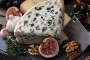

Our Story
Our humble origins begin in Saratoga in 2020, we start a journey of introducing French cheese to California. Today, we offer an eat-in cafe, cheese counter, and private events.
A Land of Great Wine and Cheese
We're proud to introduce the World's best French cheeses to California. You can click on Bretagne and Rhône‐Alpes to get more information about where our cheeses come from.
Our Cheese
| North‐West | South‐East | ||
|---|---|---|---|
| Region | City | Region | City |
| Bretagne | Saint Malo | Rhône‐Alpes | Nyons |
| Dinan | Lyon | ||
A Cheese Glossary
- Bretagne
- Brittany, in English, is a cultural region in the west of France, covering the western part of what was known as Armorica during the period of Roman occupation. It became an independent kingdom and then a duchy before being united with the Kingdom of France in 1532 as a province governed as if it were a separate nation under the crown.
- Chèvre
- A fresh, young cheese made from goat's milk.
- Rhône‐Alpes
- It is located on the eastern border of the country, towards the south. The region was named after the Rhône and the Alps mountain range. Its capital, Lyon, is the second-largest metropolitan area in France after Paris. Rhône‐Alpes has the sixth-largest economy of any European region.
Reference: Wikipedia
Farms We Import From
- North‐West
- Saint Malo
- La Ferme de Saint Malo
- Dinan
- La Ferme du desert
- Saint Malo
- South‐East
- Nyons
- La Ferme des fromages
- Lyon
- La Ferme des chèvres
- Nyons